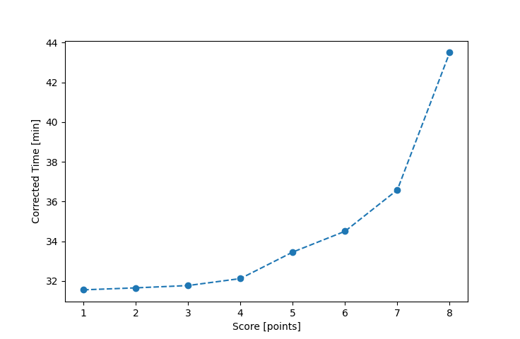

| Wind: | 2-3 (BFT) |
|---|---|
| RC: | Bill_P, Jay_H |
| Date: | August 21, 2016 |
| Notes: | M2 190 |
| Rank / Score | Name | Boat | Input Time [mm:ss] | Input Offset [mm:ss] | Race Time [mm:ss] | Race Time [s] | Handicap | Corrected Time [s] | Corrected Time [mm:ss] |
|---|---|---|---|---|---|---|---|---|---|
| 1.0 | Ron_F | F5 | 30:29 | 00:00 | 30:29 | 1829 | 0.96600 | 1893 | 31:33 |
| 2.0 | Art_M | SWSX | 30:21 | 00:00 | 30:21 | 1821 | 0.95900 | 1899 | 31:39 |
| 3.0 | John_T | US-1 | 29:00 | 00:00 | 29:00 | 1740 | 0.91300 | 1906 | 31:46 |
| 4.0 | Rod_H | LASEM | 31:15 | 00:00 | 31:15 | 1875 | 0.97300 | 1927 | 32:07 |
| 5.0 | Pat_B | WF | 30:40 | 00:00 | 30:40 | 1840 | 0.91700 | 2007 | 33:27 |
| 6.0 | Lewis_V | BCN | 30:01 | 00:00 | 30:01 | 1801 | 0.87000 | 2070 | 34:30 |
| 7.0 | Ralph_H | SF | 36:44 | 00:00 | 36:44 | 2204 | 1.00400 | 2195 | 36:35 |
| 8.0 | Gail_B | SWSX | 41:43 | 00:00 | 41:43 | 2503 | 0.95900 | 2610 | 43:30 |

Application Notes:
All race results are unofficial
View source code at https://github.com/cessnao3/portsmouthracecalc/